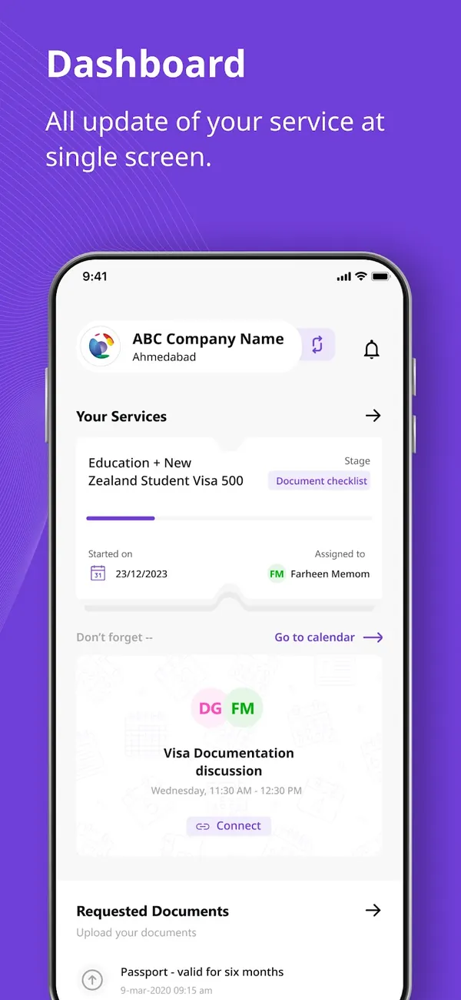
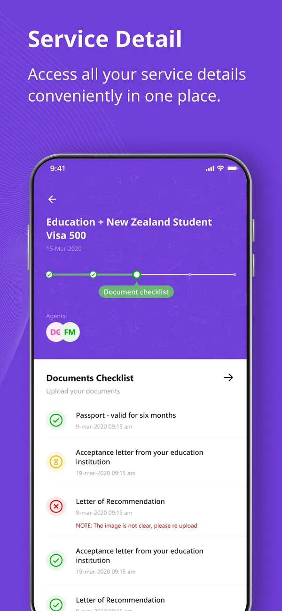

Documents
A checklist that says exactly what’s missing.
Applicants need to know which documents are still missing, and by when. The due-by checklist shows that, and checks each file as it’s uploaded.
It also works on a patchy connection, with clear empty, error and success states.

- A green tick: the file is in and checked.
- An hourglass: still waiting.
- A rejected file says why, so the applicant knows what to fix.
Screens


Screen by screen.


From the Kondesk listing on Google Play.
System
One design system and motion language for five apps.
With one designer and five apps, the system had to do a lot of the work. I built a shared design system and a motion language in Rive that all five apps used.
For handoff I made a specs and states pack, so engineering knew how each screen should look when empty, when something failed, and when it worked.